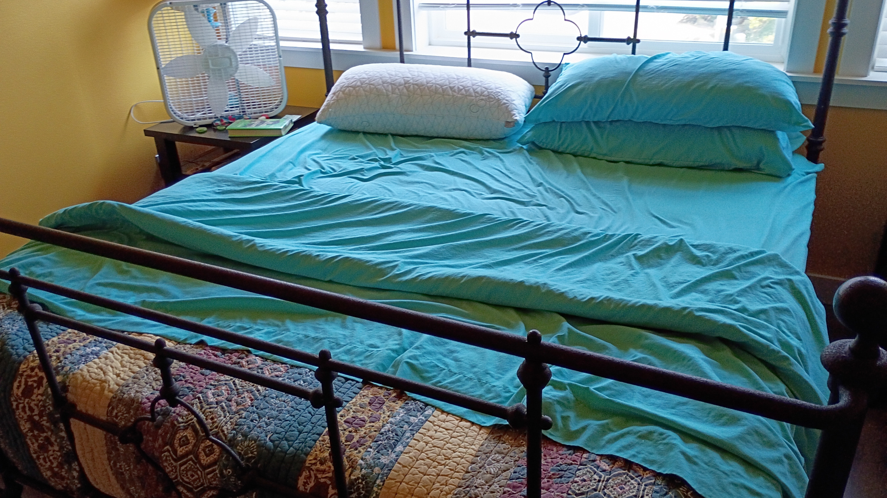
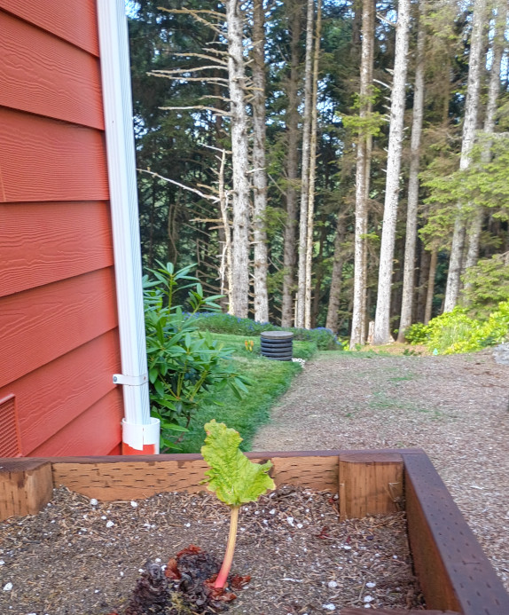

making the bed: tasteful nude

❄
Ever get the feeling your mind isn't on your side?
❄
making the bed: breaking wave moving up the beach

❄
4 Ways Women Are Physically Stronger Than Men (original)
In September, Tara Dower became the fastest person ever to complete the Appalachian Trail. Her record - 40 days, 18 hours and 6 minutes - was 13 hours faster than the previous record holder, a man. That same year, 18-year-old Audrey Jimenez made history in Arizona as the first girl to win a Division 1 high school state wrestling title - competing against boys.
Across a variety of sports, women are not just catching up after generations of exclusion from athletics - they’re setting the pace. In ultramarathons, women regularly outperform men, especially as distances stretch toward the extreme. Jasmin Paris, who in 2024 became one of only 20 people ever to finish the brutal 100-mile Barkley Marathons race in under 60 hours - while pumping breast milk.
❄

❄
It's 10pm, do you know where your children are?
❄

❄
C.L.A.W.S. - Cat Lovers Against White Supremacy
❄

❄
making the bed: all buttoned up
❄
aspirational rhubarb.

❄
On 4 August 2020, a major explosion occurred in Beirut, Lebanon, triggered by the ignition of 2,750 tonnes of ammonium nitrate. The chemical, confiscated in 2014 from the cargo ship MV Rhosus and stored at the Port of Beirut without adequate safety measures for six years, detonated after a fire broke out in a nearby warehouse. The explosion resulted in at least 218 fatalities, 7,000 injuries, and approximately 300,000 displaced individuals, alongside property damage estimated at US$15 billion. The blast released energy comparable to 1.1 kilotons of TNT, ranking it among the most powerful non-nuclear explosions ever recorded and the largest single detonation of ammonium nitrate.
compilation of videos of beirut port explosion.
❄
❄
Yes to this: What "Normal" Looks Like.
Not to pick on this person, it’s a funny protest sign — but it seems like a lot of people are thinking like we’re in a “one weird trick” (impeachment) scenario and, once we get that done, we’ll magically return to some type of “normal” and we can all go home… but the concept of normality is doing some heavy lifting here.
It's normal for minimum wage to stay the same for decades.
It's normal that people earning low wages must work multiple jobs and often still qualify for food stamps.
It's normal that billionaires exist when low-paid workers have to decide between the power bill and paying the rent.
It's normal that disabled people effectively cannot marry, since they'll often lose access to government support.
It's normal to use prisoners as slave labor (or close enough to it with hourly "wages" of pennies).
It's normal that immigrants from some countries must wait decades to become citizens because of arbitrary caps.
It's normal to let immigrants get paid less and treated worse in tech jobs because they're trapped by H1B visa requirements.
It's normal that *everyone* in America is to some extent trapped in their job because healthcare is ruinously expensive.
It's normal that Americans die of preventable disease for lack of money.
It's normal that women don't get to choose what medical treatment they receive if they are pregnant.
It's normal to address gun violence by blaming mental health but not increasing funding to expand access.
It's normal to "solve" homelessness by throwing away all of someone's worldly possessions and putting them on a one-way bus out of town.
It's normal that kids go hungry at lunch.
It's normal that Puerto Ricans and people from D.C. are denied congressional representation.
It's normal that 70- and 80-year-olds hold most of the political power in the country, and people under 40 very little.
It's normal to hand over all our personal data to megacorporations who run extensive systems of surveillance that they share with law enforcement.
It's normal that the government spies on its own citizens.
It's normal that hundreds of people die in car crashes daily.
It's normal that our spaces are built for cars, not people, and driving is often the only way to get around.
It's normal that the US government doesn’t honor its treaties with Tribes.
It's normal that we supply Israel with funding while they enact genocide.
It's normal that our water rights system is so terrible, and our water use so excessive, that the Colorado River no longer reaches the Gulf of California.
It's normal that downstream communities must bear the health burdens and costs of upstream industrial polluters.
I'll add: it's normal to vote for the least worst candidate, but the above (and below) is what you get after decade upon decade upon decade of voting for the least worst candidate.
❄
❄
More Bounce to the Ounce by Zapp
❄
How Bar-Headed Geese Fly Over the Himalayas
High in the sky fly bar-headed gese. Twice a year, these amazing birds migrate over the Himalayas, the tallest mountains on the planet. Flying requires ten to twenty times more oxygen than resting. Yet at this altitude there's only half to a third of the oxygen.
Bar-headed Geese are adapted to fly in low oxygen conditions. They have larger lungs and breathe more efficiently than other birds. Their hemoglobin, the protein that carries oxygen in the blood, also binds oxygen more tightly than that of other birds.
❄
Practice Random Acts of Reading.

caveat lector